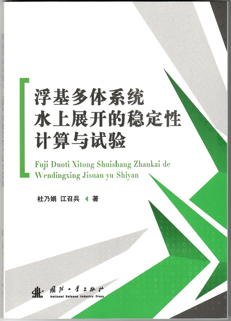
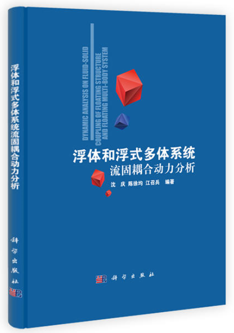
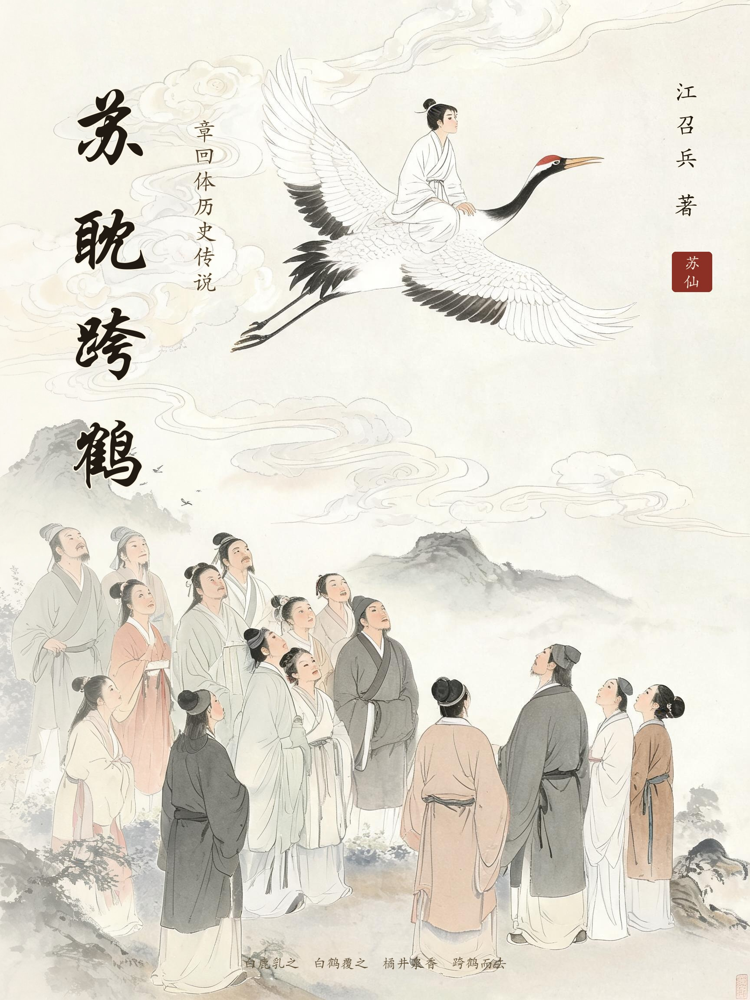

专著
除期刊论文与工程实践之外，江召兵亦从事面向普通读者的长篇写作，尝试把经济学与科技变局的分析，翻译成普通人力所能及的行动。以下七部作品全文公开，供在线阅读与下载；其中《浮基多体系统水上展开的稳定性计算与试验》与《浮体和浮式多体系统流固耦合动力分析》两部工程专著置前，其余按成稿时间倒序排列。另作章回体历史传说《苏耽跨鹤》（全五卷四十回）与现代长篇历史传说《杏花深处秣陵关》（楔子、四卷六十七章与尾声二篇），均已完稿，全文公开供读者在线阅读。
全部作品

02
工程专著
《浮体和浮式多体系统流固耦合动力分析》
本书由沈庆教授、陈徐均教授、江召兵博士三人分工合作完成：沈庆撰写第一、二、三、四、七、八章，陈徐均撰写第五章，江召兵撰写第六、九、十章，最后由沈庆统稿。全书结合不同形式的浮体和浮式多体系统，经简化和线性化引出不同的理论分析框架和求解途径，从基本理论、数值模拟技术和动力响应特性等方面进行系统论述，内容涵盖刚体动力分析基础、流固耦合中的速度势问题、浮体水动力系数求解、时域动力分析等，可作为船舶与海洋工程、港口海岸及近海工程、作战工程保障和工程力学等交叉方向研究生与工程技术人员的参考书。
本次提供书稿两部分：第1-7章（185页，含前言与目录）与第8-10章（73页），均提供PDF与Word两种格式。Word版中的插图已按显示尺寸重新压缩以便下载，正文、公式与版式未作改动。
引用格式
沈庆, 陈徐均, 江召兵. 浮体和浮式多体系统流固耦合动力分析[M]. 北京: 科学出版社, 2011.

03
章回体历史小说
《苏耽跨鹤》
以明清章回体例重写西汉桂阳郡苏耽事：江边感孕、桃花洞弃婴、白鹿乳之、白鹤覆之、橘井活人、跨鹤升仙、化鹤题楼。苏仙岭即古牛脾山，传说苏耽就在此山跨鹤；山随人名，至今为郴州地标。郴州火车站站前广场上，苏耽跨骑白鹤的雕像已经立了多年，是这座城市的精神图腾；本书写的，正是这个图腾背后的人。
传说把儿子写成了神，本书却把重心放在那位不肯解释自己的母亲身上：她怎样在耻笑与流言里把儿子养大，怎样在被神化的儿子面前守住“他只是我儿子”这一句，又怎样亲手送他离开——孝感动天的另一面，是一个女人一生的代价。由此再写此后两千年传说的层累：唐碑、宋封、三绝碑、徐霞客、清人考据、今日非遗，让故事最终回到传说本身：谁在记，记的是谁。
传说的背后，是一位母亲。
04
科普专著
《史上最美数学图形：科学与艺术的结合》
本书以五十个经典数学图形为线索，从斐波那契螺旋、黄金矩形与黄金分割、心形线、玫瑰线，讲到曼德勃罗集、朱利亚集、科赫雪花与L系统，再到洛伦兹吸引子、逻辑斯蒂分岔图、双摆与三体，以及柏拉图多面体、莫比乌斯带、克莱因瓶、Hopf纤维、极小曲面，直至正多边形与双曲镶嵌、埃舍尔与彭罗斯镶嵌、万花筒与十七种壁纸群、帕斯卡三角、乌拉姆素数螺旋、傅里叶级数绘图与圆周率之美。全书另有序章"为什么数学是美的"与尾声"数学与艺术：两种语言，一种美"，共七篇五十章，配148幅程序绘制的高分辨率插图。
每章都从自然界、艺术或日常生活中的现象入手——兔子的繁殖与星系旋臂、鹦鹉螺的生长曲线、向日葵籽盘上137.5°的排布、车轮滚出的摆线——再讲清其背后的数学机制，并给出可直接复现的绘图方法。书末附延伸阅读、图源与各章绘图代码总索引，读者可据此复现书中每一幅图形。
05
科普专著
《运气工程学》
本书与《不确定年代的生存经济学》互为姊妹篇，取向则相反：不再回避公式，而是尝试把"运气"正式立为可研究的对象——给出公设、术语、分类法（五机制与个人/团队/平台三尺度）、模型、测量方案、干预工具与可验收命题。全书以"暴露→识别→转化→放大→收敛"五段过程闭环贯通，并把同一套逻辑从个人推行到团队与平台。附录A–G给出术语与符号表、工具包、数据与可复现算例、学术对话表、运气审计表、案例库与十二要素参数速查表。全书264页：前言、四篇十七章与七个附录。
06
科普专著
《不确定年代的生存经济学——写给普通人的变局观察与行动指南》
本书写给感到焦虑的普通人。过去几年，我们目睹了太多"教科书级"的事件：全球大通胀卷土重来，银行在48小时内倒闭，房价告别只涨不跌的神话，AI在几个月内改写了无数职业的前景，延迟退休从传闻变成时间表。每一个新闻标题背后，都是千万个普通家庭具体的困惑：存款利率一降再降，钱放哪里？房子缩水了，要不要提前还贷？孩子毕业即遇"三人抢一岗"，怎么办？35岁的裁员名单，会不会有一天轮到自己？
市面上回应这些焦虑的声音大致有两种：一种是学院派的宏大叙事，理论严谨却离你的账本太远；另一种是流量驱动的贩卖焦虑，情绪浓烈却给不出经得起推敲的对策。本书试图站在两者之间的空地上：用诺贝尔奖级的经济学理论看懂正在发生的变局，再把理论翻译成普通人力所能及的行动。
全书分为三篇，每篇五章，每章五节。上篇"变局"回答"发生了什么"：通胀与货币、债务大山、全球化退潮、AI革命、老龄化——五条主线构成我们身处时代的坐标系。中篇"透镜"回答"为什么"：周期、人性、信息、制度、风险——五副经过诺奖检验的理论眼镜，让你看见现象背后的机制。下篇"应对"回答"怎么办"：家庭报表体检、职业策略、投资纪律、小企业生存、压力测试——五套可以直接上手的工具。每一节都按照"故事→机制→国内关切→理论→行动"的逻辑展开。
有三件事本书不做：不做具体时点的预测，不使用任何数学公式（所有理论都用故事、类比与图表讲清），不许诺任何暴富捷径。全书的基调是稳健优先于收益，生存优先于繁荣，纪律优先于聪明。书中引用的国内民生数据——毕业生人数、失业率、法拍房、存款利率、延迟退休时间表——均来自公开报道与官方统计，截至2026年年中。数据会过时，但机制长存：这正是本书希望留给读者的东西——一套在不确定年代安身立命的思维工具与行动纪律。

07
现代长篇历史传说
《杏花深处秣陵关》
一部写南京古称“秣陵”的长篇历史传说。汉末建安年间，孙权自京口徙治秣陵、筑石头城、改秣陵为建业；就在新旧交替的那几年，八个草根凡人——落第方士、跛足仵作、杀猪的屠户、跳神的老巫、染坊女儿、乞儿、逃兵乐工、县衙书吏——受雇为一个死去的小县尉“造”出一尊神。他们造神迹、画舆图、藏青骨、挡查案，把“己骨清，死当为神”一句酒后胡言，一步步说成了真。而那个被他们造出来的神，反过来成全了这八个人。
从秦代“五百年后金陵有天子气”的望气旧谶，到蒋子文显灵、青溪小姑、白马渡江，传说的每一层，都落回市井的人与事：验骨的仵作、守夜的石户、拆关的守关人、刻砖的庙役、说书的说书人，一代一代，把一座城的记性传了下去。全书楔子、四卷六十七章与尾声二篇，二十六万余字，完稿后于本站全文公开。
这城改了名字，城底下埋着的东西一样也没改。